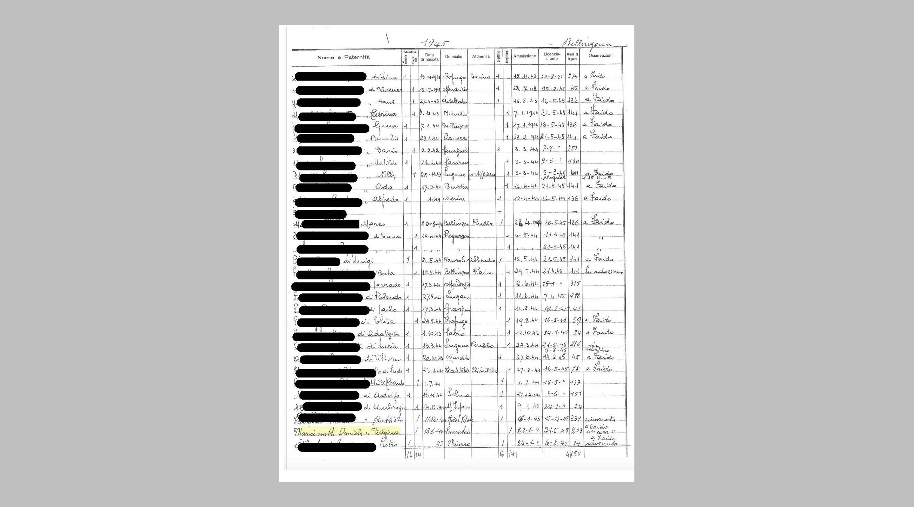
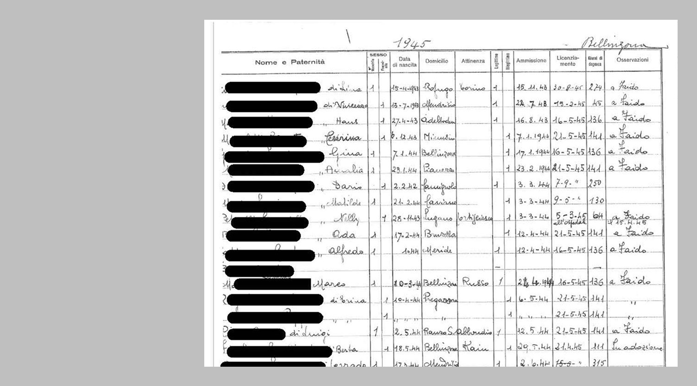
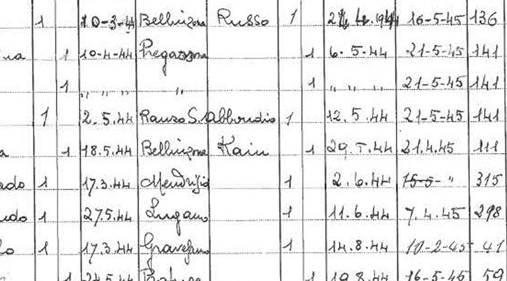

In vielen Fällen haben sie darunter schwer gelitten und ihre körperliche, psychische oder sexuelle Integrität oder ihre geistige Entwicklung wurde unmittelbar und in schwerer Weise beeinträchtigt. Im Jahr 2010 entschuldigte sich Bundesrätin Eveline Widmer-Schlumpf im Namen des Bundesrates für das grosse Leid, das den administrativ versorgten Personen angetan wurde. Im Jahr 2013 folgte die Entschuldigung von Bundesrätin Simonetta Sommaruga bei allen Opfern von fürsorgerischen Zwangsmassnahmen und Fremdplatzierungen. Damit ist ein Prozess in Gang gekommen, in dem dieses schwierige Kapitel der Schweizer Sozialgeschichte aufgearbeitet wurde bzw. nach wie vor wird.

Die Liste So sieht es von Fern aus.
Quelle Veröffentlichungen der Unabhängigen Expertenkommission Administrative Versorgungen, Bd. 7, 2019, S. 63); rechts: Protokoll der Anhörung einer administrativ versorgten Person vom 20. Juli 1966 (Staatsarchiv des Kantons Schwyz, Akten 3/14_861/170 RRB 2338

Genauer Wenn man genauer hinschaut.

Da steht es ja! Hier wurde das und das gemacht.